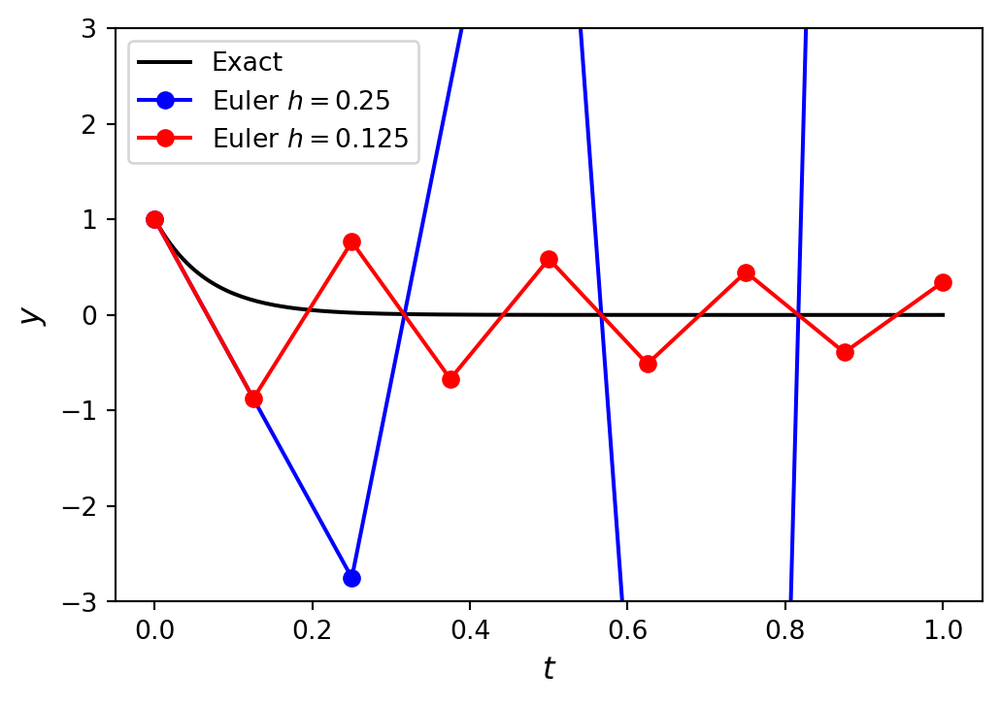
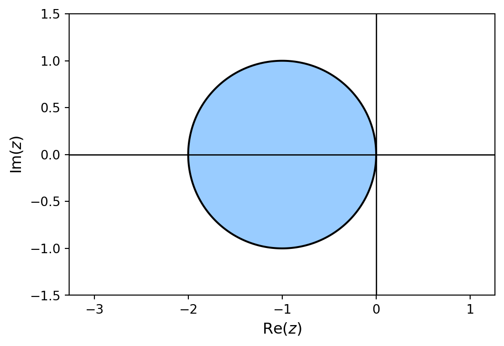
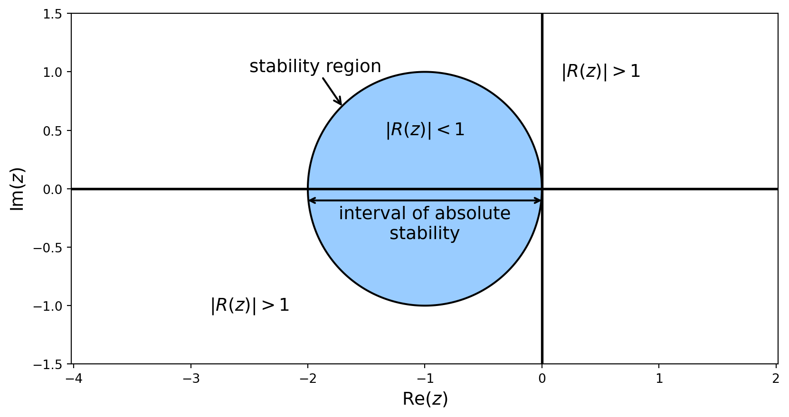
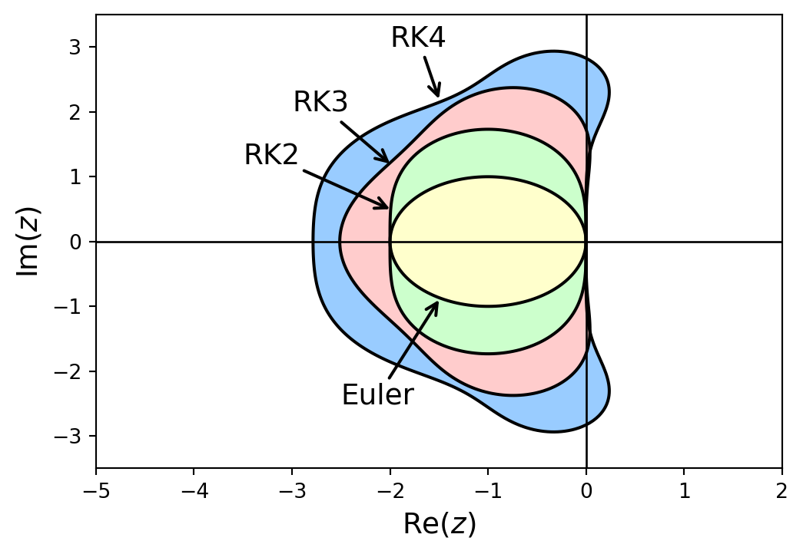
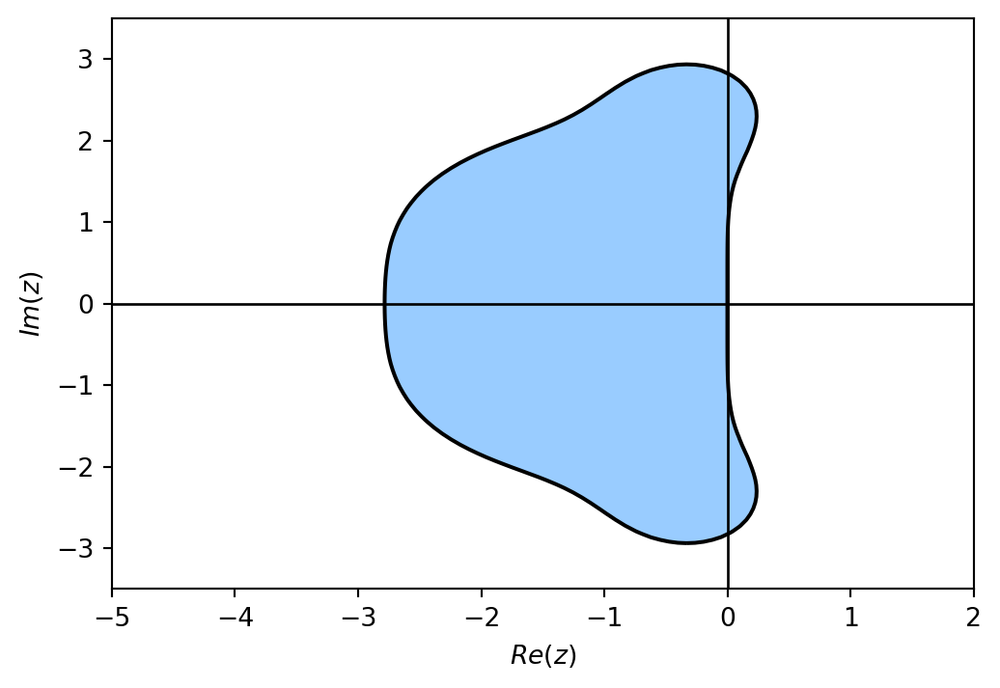
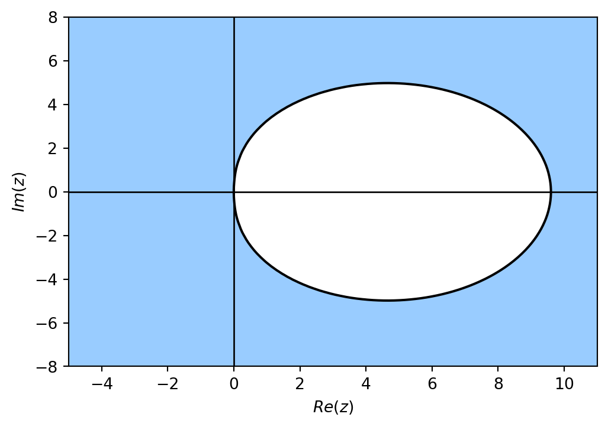

6G6Z3017 Computational Methods in ODEs
A stable solver is one that produces solutions that are bounded.
For example, consider the Euler method solution to the IVP \(y'=-15y\), \(t \in [0, 1]\), \(y(0) = 1\).

The solution using \(h = 0.125\) remains bounded but the solution using \(h=0.25\) diverges.
Note
If \(e_n\) is the local truncation error of a numerical method defined by
\[\begin{align*} e_n = |y(t_{n}) - y_{n}|, \end{align*}\]
where \(y(t_n)\) is the exact solution and \(y_n\) the numerical approximation assuming that the solution at the previous step was exact. The method is considered stable if
\[ |e_{n+1} - e_n | \leq 1, \]
for all steps of the method. If a method is not stable then it is unstable.
When solving IVPs numerically, some problems behave well and they can be solved accurately using large values of the step length \(h\). Other problems force us to use small step lengths use they become unstable. These problems as known as stiff problems.
An informal definition of stiffness is provided by Lambert (1991)
“If a numerical method with a finite region of absolute stability, applied to a system with any initial conditions, is forced to use in a certain interval of integration a step length which is excessively small in relation to the smoothness of the exact solution in that interval, then the system is said to be stiff in that interval.”
Given a linear system \(\mathbf{y}' = A \mathbf{y}\) then the stifness ratio is defined as
\[ S= \frac{\max_i (Re(\lambda_i))}{\min_i (Re(\lambda_i))},\]
where \(\lambda_i\) are the eigenvalues of the matrix \(A\). If the value of \(S\) is large, then the system is stiff.
Consider the system
\[ \begin{align*} y_1' &= -1000y_1 + 999y_2, \\ y_2' &= -y_2. \end{align*} \]
Here \(A = \begin{pmatrix} -1000 & 999 \\ 0 & -1 \end{pmatrix}\), so the eigenvalues satisfy
\[ \begin{align*} 0 &= | A - \lambda I | \\ &= \begin{vmatrix} -1000 - \lambda & 999 \\ 0 & -1 - \lambda \end{vmatrix} \\ &= (-1000-\lambda) (-1 - \lambda). \end{align*} \]
So the eigenvalues are \(\lambda_1 = -1000\) and \(\lambda_2 =-1\) and the stiffness ratio is
\[ S = \frac{\lambda_1}{\lambda_2} = \frac{-1000}{-1} = 1000.\]
Since \(S\) is large then this is a stiff system.
To examine the behaviour of the local truncation errors we use the following test equation
\[ y' = \lambda y. \]
This test equation is chosen as it is a simple ODE which has the solution \(y=e^{\lambda t}\). Over a single step of a Runge-Kutta method, the values of \(y_{n+1}\) are updated using the values of \(y_n\), so the values of the local truncation error, \(e_{n+1}\), are also updated using \(e_n\) by the same method. This allows us to define a stability function for a method.
Note
The stability function of a method, denoted by \(R(z)\), is the rate of growth over a single step of the method when applied to calculate the solution of an ODE of the form \(y'=\lambda t\) where \(z = h \lambda\) and \(h\) is the step size
\[ y_{n+1} = R(z)y_n. \]
If the Euler method is used to solve the test equation \(y'=\lambda y\) then the solution will be updated over one step using
\[ y_{n+1} = y_n + h f(t_n ,y_n) = y_n + h \lambda y_n, \]
Let \(z = h\lambda\) then
\[ y_{n+1} = y_n + z y_n =(1+z)y_n. \]
So the stability function of the Euler method is \(R(z) = 1 + z\).
The general form of a Runge-Kutta method is
\[ \begin{align*} y_{n+1}&=y_n + h \sum_{i=1}^s b_i k_i ,\\ k_i &=f(t_n +c_i h,y_n +h\sum_{j=1}^s a_{ij} k_j ). \end{align*} \]
Let \(Y_i = y_n + h \displaystyle \sum_{j=1}^s a_{ij} k_i\) and applying the method to the test equation \(y' = \lambda y\) we have
\[ \begin{align*} y_{n+1} &=y_n +h\lambda \sum_{i=1}^s b_i Y_i ,\\ Y_i &=y_n +h\lambda \sum_{j=1}^s a_{ij} Y_j . \end{align*} \]
Let \(z = h\lambda\) and expanding out the summations in the stage values
\[ \begin{align*} Y_1 &=y_n +z(a_{11} Y_1 + a_{12} Y_2 + \cdots + a_{1s} Y_s),\\ Y_2 &=y_n +z(a_{21} Y_1 + a_{22} Y_2 + \cdots + a_{2s} Y_s),\\ &\vdots \\ Y_s &=y_n +z(a_{s1} Y_1 + a_{s2} Y_2 + \cdots + a_{ss} Y_s). \end{align*} \]
We can write these as the matrix equation
\[ \begin{align*} \begin{pmatrix} Y_1 \\ Y_2 \\ \vdots \\ Y_s \end{pmatrix} = \begin{pmatrix} y_n \\ y_n \\ \vdots \\ y_n \end{pmatrix} + z \begin{pmatrix} a_{11} & a_{12} & \cdots & a_{1s} \\ a_{21} & a_{22} & \cdots & a_{2s} \\ \vdots & \vdots & \ddots & \vdots \\ a_{s1} & a_{s2} & \cdots & a_{ss} \end{pmatrix} \begin{pmatrix} Y_1 \\ Y_2 \\ \vdots \\ Y_s \end{pmatrix}. \end{align*} \]
Let \(Y = (Y_1 ,Y_2 ,\dots ,Y_s )^\mathsf{T}\) and \(\mathbf{e}=(1,1,\dots ,1)^\mathsf{T}\) then
\[ Y = \mathbf{e} y_n + z A Y. \]
Expanding the summation in the equation for updating the solution over a single step and using \(z = h \lambda\) gives
\[\begin{align*} y_{n+1} &= y_n + h (b_1 \lambda Y_1 + b_2 \lambda Y_2 + \cdots + b_s \lambda Y_s) \\ &= y_n + z (b_1 Y_1 + b_2 Y_2 + \cdots + b_s Y_s) \end{align*}\]
which can be written as the matrix equation
\[ y_{n+1} =y_n + z \mathbf{b}^\mathsf{T} Y. \]
The stability functions for explicit and implicit Runge-Kutta methods are derived using different approaches.
To derive the stability function of an explicit Runge-Kutta method we rearrange \(Y = \mathbf{e} y_n + z A Y\)
\[ \begin{align*} Y - zAY &= \mathbf{e}y_n \\ (I - zA)Y &= \mathbf{e}y_n\\ Y &= (I - zA)^{-1} \mathbf{e}y_n, \end{align*} \]
and substituting into \(y_{n+1} =y_n + z \mathbf{b}^\mathsf{T} Y\)
\[ \begin{align*} y_{n+1} &= y_n +z\mathbf{b}^\mathsf{T} (I - zA)^{-1} \mathbf{e} y_n \\ &= (1 + z \mathbf{b}^\mathsf{T} (I - zA)^{-1} \mathbf{e})y_n , \end{align*} \]
so the stability function is
\[ \begin{align*} R(z) = 1 + z\mathbf{b}^\mathsf{T} (I - zA)^{-1} \mathbf{e} \end{align*} \]
\[ \begin{align*} R(z) = 1 + z\mathbf{b}^\mathsf{T} (I - zA)^{-1} \mathbf{e} \end{align*} \]
Using the geometric series of matrices
\[ \begin{align*} (I - zA)^{-1} = \sum_{k=0}^{\infty} (zA)^k = 1 + zA + (zA)^2 + (zA)^3 + \cdots \end{align*} \]
then
\[ \begin{align*} R(z) &= 1 + z \mathbf{b}^\mathsf{T} \sum_{k=0}^{\infty} (zA)^k \mathbf{e} = 1 + \sum_{k=0}^{\infty} \mathbf{b}^\mathsf{T} A^k \mathbf{e}\,z^{k+1} \\ &= 1 + \mathbf{b}^\mathsf{T} \mathbf{e} z + \mathbf{b}^\mathsf{T} A \mathbf{e} z^2 + \mathbf{b}^\mathsf{T} A^2 \mathbf{e} z^3 + \cdots \end{align*} \]
This is the stability function for an ERK method.
Since the solution to the test equation is \(y = e^{\lambda t}\), over one step of an explicit Runge-Kutta method we would expect the local truncation errors to change at a rate of \(e^z\). The series expansion of \(e^z\) is
\[ e^z = 1 + z + \frac{1}{2!}z^2 + \frac{1}{3!}z^3 + \frac{1}{4!}z^4 + \cdots \]
The stability function for an ERK method is
\[ \begin{align*} R(z) &= 1 + \mathbf{b}^\mathsf{T} \mathbf{e} z + \mathbf{b}^\mathsf{T} A \mathbf{e} z^2 + \mathbf{b}^\mathsf{T} A^2 \mathbf{e} z^3 + \cdots \end{align*} \]
so
\[ \begin{align*} \frac{1}{k!}= \mathbf{b}^\mathsf{T} A^{k-1} \mathbf{e}, \end{align*} \]
which must be satisfied up to the \(k\)th term for an order \(k\) explicit method to be stable.
An explicit Runge-Kutta method is defined by the following Butcher tableau
\[ \begin{array}{c|cccc} 0 & & & & \\ \frac{1}{2} & \frac{1}{2} & & & \\ \frac{3}{4} & 0 & \frac{3}{4} & & \\ 1 & \frac{2}{9} & \frac{1}{3} & \frac{4}{9} & \\ \hline & \frac{7}{24} & \frac{1}{4} & \frac{1}{3} & \frac{1}{8} \end{array} \]
Determine the stability function for this Runge-Kutta method and hence find its order.
Calculating \(\mathbf{b}^\mathsf{T}A^{k - 1}\mathbf{e}\) for \(k = 1, \ldots, 4\).
\[ \begin{align*} k &= 1: & \mathbf{b}^\mathsf{T}A^{0}\mathbf{e} &= 1, \\ k &= 2: & \mathbf{b}^\mathsf{T}A^{1}\mathbf{e} &= (\tfrac{7}{24}, \tfrac{1}{4}, \tfrac{1}{3}, \tfrac{1}{8}) \begin{pmatrix} 0 & 0 & 0 & 0 \\ \frac{1}{2} & 0 & 0 & 0 \\ 0 & \frac{3}{4} & 0 & 0 \\ \frac{2}{9} & \frac{1}{3} & \frac{4}{9} & 0 \end{pmatrix} \begin{pmatrix} 1 \\ 1 \\ 1 \\ 1 \end{pmatrix} = \frac{1}{2}, \\ k &= 3: & \mathbf{b}^\mathsf{T}A^{2}\mathbf{e} &= (\tfrac{7}{24}, \tfrac{1}{4}, \tfrac{1}{3}, \tfrac{1}{8}) \begin{pmatrix} 0 & 0 & 0 & 0 \\ 0 & 0 & 0 & 0 \\ \frac{3}{8} & 0 & 0 & 0 \\ \frac{1}{6} & \frac{1}{3} & 0 & 0 \end{pmatrix} \begin{pmatrix} 1 \\ 1 \\ 1 \\ 1 \end{pmatrix} = \frac{3}{16}, \\ k &= 4: & \mathbf{b}^\mathsf{T}A^{3}\mathbf{e} &= (\tfrac{7}{24}, \tfrac{1}{4}, \tfrac{1}{3}, \tfrac{1}{8}) \begin{pmatrix} 0 & 0 & 0 & 0 \\ 0 & 0 & 0 & 0 \\ 0 & 0 & 0 & 0 \\ \frac{1}{6} & 0 & 0 & 0 \end{pmatrix} \begin{pmatrix} 1 \\ 1 \\ 1 \\ 1 \end{pmatrix} = \frac{1}{48}. \\ \end{align*} \]
Therefore the stability function is
\[ \begin{align*} R(z) = 1 + z + \frac{1}{2} z^2 + \frac{3}{16} z^3 + \frac{1}{48} z^4, \end{align*} \]
which agrees to the series expansion of \(e^z\) up to and including the \(z^2\) term. Therefore this method is of order 2.
To determine the stability function for an IRK method we consider the stability function of a general Runge-Kutta method
\[ \begin{align*} y_{n+1} & = y_n + z \mathbf{b}^\mathsf{T} Y, \\ Y &= \mathbf{e} y_n + z A Y, \end{align*} \]
where \(Y = (Y_1, Y_2, \ldots, Y_s)^\mathsf{T}\). Rewriting these gives
\[ \begin{align*} y_{n+1} - z \mathbf{b}^\mathsf{T} Y &= y_n \\ (I - z A) Y &= \mathbf{e}y_n. \end{align*} \]
We can write these as a matrix equation
\[ \begin{align*} \begin{pmatrix} 1 & -z b_1 & -z b_2 & \cdots & -z b_s \\ 0 & 1-z a_{11} & -z a_{12} & \cdots & -z a_{1s} \\ 0 & -z a_{21} & 1-z a_{22} & \cdots & -z a_{2s} \\ \vdots & \vdots & \vdots & \ddots & \vdots \\ 0 & -z a_{s1} & -z a_{s2} & \cdots & 1-z a_{ss} \end{pmatrix} \begin{pmatrix} y_{n+1} \\ Y_1 \\ Y_2 \\ \vdots \\ Y_s \end{pmatrix}= \begin{pmatrix} y_n \\ y_n \\ y_n \\ \vdots \\ y_n \end{pmatrix}. \end{align*} \]
Using Cramer’s rule to solve this system for \(y_{n+1}\) we have
\[ \begin{align*} y_{n+1} = \frac{\det \begin{pmatrix} y_n & -zb_1 & -zb_2 & \cdots & -zb_s \\ y_n & 1-za_{11} & -za_{12} & \cdots & -za_{1s} \\ y_n & -za_{21} & 1-za_{22} & \cdots & -za_{2s} \\ \vdots & \vdots & \vdots & \ddots & \vdots \\ y_n & -za_{s1} & -za_{s2} & \cdots & 1-za_{ss} \end{pmatrix}}{\det (I-zA)}. \end{align*} \]
Performing a row operation of subtracting the first row of matrix from all other rows gives
\[ \begin{align*} y_{n+1} =\frac{\det \begin{pmatrix} y_n & -zb_1 & -zb_2 & \cdots & -zb_s \\ 0 & 1-za_{11} +zb_1 & -za_{12} +zb_2 & \cdots & -za_{1s} +zb_s \\ 0 & -za_{21} +zb_1 & 1-za_{22} +zb_2 & \cdots & -za_{2s} +zb_s \\ \vdots & \vdots & \vdots & \ddots & \vdots \\ 0 & -za_{s1} +zb_1 & -za_{s2} +zb_2 & \cdots & 1-za_{ss} +zb_s \end{pmatrix}}{\det(I-zA)}. \end{align*} \]
The stability function of an implicit Runge-Kutta method is
\[R(z) = \frac{\det (I - zA + z\mathbf{e}\mathbf{b}^\mathsf{T})}{\det(I - zA)}.\]
where \(\mathbf{e}\mathbf{b}^\mathsf{T}\) is a diagonal matrix with the elements of \(\mathbf{b}\) on the main diagonal
\[ \begin{align*} \mathbf{e}\mathbf{b}^\mathsf{T} = \begin{pmatrix} b_1 & 0 & \cdots & 0 \\ 0 & b_2 & \ddots & \vdots \\ \vdots & \ddots & \ddots & 0 \\ 0 & \cdots & 0 & b_s \end{pmatrix}. \end{align*} \]
The Radau IA IRK method is defined by the following Butcher tableau
\[ \begin{array}{c|cc} 0 & \frac{1}{4} & -\frac{1}{4} \\ \frac{2}{3} & \frac{1}{4} & \frac{5}{12} \\ \hline & \frac{1}{4} & \frac{3}{4} \end{array} \]
Determine the stability function of this method
\[ \begin{align*} R(z) &= \frac{\det \left( \begin{pmatrix} 1 & 0 \\ 0 & 1 \end{pmatrix} - z \begin{pmatrix} \frac{1}{4} & -\frac{1}{4} \\ \frac{1}{4} & \frac{5}{12} \end{pmatrix} + z \begin{pmatrix} \frac{1}{4} & 0 \\ 0 & \frac{3}{4} \end{pmatrix} \right) } { \det \left( \begin{pmatrix} 1 & 0 \\ 0 & 1 \end{pmatrix} - z \begin{pmatrix} \frac{1}{4} & -\frac{1}{4} \\ \frac{1}{4} & \frac{5}{12} \end{pmatrix} \right) } = \frac{ \det \begin{pmatrix} 1 & \frac{1}{4}z \\ -\frac{1}{4}z & 1 + \frac{1}{3}z \end{pmatrix} } { \det \begin{pmatrix} 1 - \frac{1}{4}z & \frac{1}{4}z \\ -\frac{1}{4}z & 1 - \frac{5}{12}z \end{pmatrix} }\\ &= \frac{1 + \frac{1}{3}z + \frac{1}{16}z^2}{1 - \frac{2}{3}z + \frac{1}{6}z^2}. \end{align*} \]
We have seen that a necessary condition for stability of a method is that the local truncation errors must not grow from one step to the next.
A method satisfying this basic condition is considered to be absolutely stable.
Note
A method is considered to be absolutely stable if \(|R(z)| \leq 1\) for \(z\in \mathbb{C}\).
It is useful to know for what values of \(h\) we have a stable method, this gives the definition of the region of absolute stability.
Note
The region of absolute stability is the set of \(z\in \mathbb{C}\) for which a method is absolutely stable
\[ \{ z:z\in \mathbb{C},|R(z)|\leq 1 \} \]
The region of absolute stability for the Euler method has been plotted below

import numpy as np
import matplotlib.pyplot as plt
# Generate z values
xmin, xmax, ymin, ymax = -3, 1, -1.5, 1.5
X, Y = np.meshgrid(np.linspace(xmin, xmax, 200),np.linspace(ymin, ymax, 200))
Z = X + Y * 1j
# Define stability function
R = 1 + Z
# Plot stability region
fig = plt.figure()
contour = plt.contourf(X, Y, abs(R), levels=[0, 1], colors="#99ccff") # Plot stability region
plt.contour(X, Y, abs(R), colors= "k", levels=[0, 1]) # Add outline
plt.axhline(0, color="k", linewidth=1) # Add x-axis line
plt.axvline(0, color="k", linewidth=1) # Add y-axis line
plt.axis("equal")
plt.axis([xmin, xmax, ymin, ymax])
plt.xlabel("$\mathrm{Re}(z)$", fontsize=12)
plt.ylabel("$\mathrm{Im}(z)$", fontsize=12)
plt.show()% Generate z values
xmin = -3;
xmax = 1;
ymin = -1.5;
ymax = 1.5;
[X, Y] = meshgrid(linspace(xmin, xmax, 200), linspace(ymin, ymax, 200));
Z = X + Y * 1i;
% Define stability function
R = 1 + Z;
% Plot stability region
contourf(X, Y, abs(R), [0, 1], LineWidth=2)
xline(0, LineWidth=2)
yline(0, LineWidth=2)
colormap([153, 204, 255 ; 255, 255, 255] / 255)
axis equal
axis([xmin, xmax, ymin, ymax])
xlabel("$\mathrm{Re}(z)$", FontSize=12, Interpreter="latex")
ylabel("$\mathrm{Im}(z)$", FontSize=12, Interpreter="latex")The range values of the step length that can be chosen is governed by the stability region and provides use with the following definition.
Note
The range of real values that the step length \(h\) of a method can take that ensures a method remains absolutely stable is known as the interval of absolute stability
\[ \begin{align*} \{ z : z \in \mathbb{R}, |R(z)| \leq 1 \} \end{align*} \]

The region of absolute stability for the Euler method shows that the interval of absolute stability for the test ODE \(y'=\lambda y\) is
\[ \begin{align*} z \in [-2,0], \end{align*} \]
Since \(z = h\lambda\) then
\[ \begin{align*} h \in \left[ -\frac{2}{\lambda},0 \right], \end{align*} \]
so we have the condition
\[ \begin{align*} h \leq -\frac{2}{\lambda}. \end{align*} \]
We saw earlier that solving the ODE \(y' = -15y\) using \(h=0.25\) resulted in an unstable solution, since \(\lambda = -15\) then
\[ \begin{align*} h \leq -\frac{2}{-15} = 0.1\dot{3}. \end{align*} \]
This is why the solution using \(h=0.25\) was unstable since \(0.25 > 0.1\dot{3}\) and the solution using \(h=0.125\) was stable since \(0.125 < 0.1\dot{3}\).

RK4

Radau IA

The region of absolute stability for the explicit method is bounded in the left-hand side of the complex plane, whereas the region of absolute stability for the implicit Radau IA method is unbounded.
Note
A method is said to be A-stable if its region of absolute stability satisfies
\[ \{ z : z \in {\mathbb{C}}^- ,|R(z)| \leq 1\} \]
i.e., the method is stable for all points in the left-hand side of the complex plane.
Given an implicit Runge-Kutta method with a stability function of the form
\[ R(z) = \frac{P(z)}{Q(z)} \]
and define the \(E\)-polynomial function
\[ E(y)=Q(iy)Q(-iy)-P(iy)P(-iy), \]
then the method is A-stable if and only if the following are satisfied
Criterion A: All roots of \(Q(z)\) have positive real parts;
Criterion B: \(E(y)\geq 0\) for all \(y\in \mathbb{R}\).
The Radua IA method is defined by the following Butcher tableau
\[ \begin{array}{c|cc} 0 & \frac{1}{4} & -\frac{1}{4} \\ \frac{2}{3} & \frac{1}{4} & \frac{5}{12} \\ \hline & \frac{1}{4} & \frac{3}{4} \end{array} \]
Determine whether this method is A-stable and plot the region of absolute stability.
The stability function for the Radau IA method is
\[ \begin{align*} R(z) = \frac{1 + \frac{1}{3}z + \frac{1}{16}z^2}{1 - \frac{2}{3}z + \frac{1}{6}z^2}. \end{align*} \]
Here \(Q(z) = 1 - \frac{2}{3}z + \frac{1}{6}z^2\) which has roots at \(z = 2 \pm \sqrt{2}\) which both have positive real parts so condition A is satisfied.
\[ \begin{align*} E(y) &= \left( 1 - \frac{2}{3} i y - \frac{1}{6}y^2 \right) \left( 1 + \frac{2}{3} i y - \frac{1}{6}y^2 \right) - \left( 1 + \frac{1}{3} i y - \frac{1}{16} y^2 \right) \left( 1 - \frac{1}{3}i y - \frac{1}{16}y^2 \right) \\ &= \left( 1 + \frac{1}{9} y^2 + \frac{1}{36} y^4 \right) - \left( 1 - \frac{1}{72} y^2 + \frac{1}{256} y^4 \right) \\ &= \frac{1}{8} y^2 + \frac{55}{2304} y^4. \end{align*} \]
Since \(y_2\) and \(y_4\) are positive for all \(y\) then \(E(y)>0\) and condition B is satisfied. Since both criterion A and B are satisfied then we can say that this is an A-stable method.